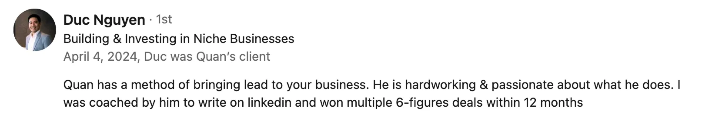

CEO-led social selling: from 0 to multiple 6-fig deals in 6 months (Duc Nguyen)

From 0 to 100K USD sales in 6 months:
here’s how Duc Nguyen overcame imposter syndrome and make his Founder Brand a social selling machine.
Duc was unsure about building on LinkedIn when we started exploring his Founder Brand’s potential.
In his words, writing here is like “driving without a driver's license” - he was not confident.
Before joining ‘Founder Brand Architect’, he:
-
Struggled to create content for personal brand & business brands
-
Had some positioning and messaging issues to iron out
-
Didn’t have a structure to map his brand authority
In 3 weeks, we had them all fixed up.
-
Applied ‘Founder Content Matrix’ to showcase his authority while benefiting his employer brand.
-
Switched from “me & my biz” content to “here’s what I learned and you can too” approach.
-
New positioning & and reader-focused approach - nailed!
Duc is a serial entrepreneur with exceptional business stories.
-
He just needed the direction
-
A workflow for easy, clear messaging
-
Some homework reminders & and support messages
From ‘almost’ invisible on socials, in 6 months, Duc attracted:
-
350K views for his businesses
-
$100K+ worth of sales closed (thru LinkedIn only)
-
Invitations to speak at industry conferences & events
Quick note: We continued working together and the review Duc made was after 1 year with us :)
Last we talked, I found out he:
-
Attracted investors and successfully raised $5M for his biz ventures
-
Sped up team recruitment process x3 without job ad through his posts
-
Is building a “move the needle” community supporting biz founders & and founder-to-be
All long-term benefits of resilient Founder Brand effort.
Remember: Founder brand is a long-term investment!
Fundraising, community building, talent acquisition, and certainly sales are your fruits to pick once you start the groundwork.